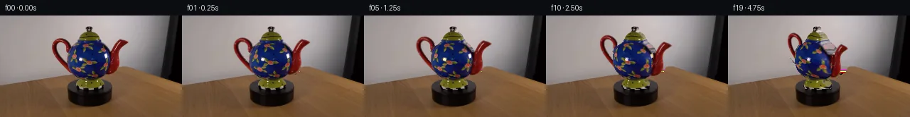

![首帧]()

Round 00
2026-11-05T18:34:35.352626+00:00像素候选变化代码 +243/−0inspection 更新
pixels 36e72eca34d816f9 · code b6b75138667e3ff3
查看本轮 generate.py 真实 diff
--- previous/generate.py
+++ current/generate.py
@@ -0,0 +1,243 @@
+"""Source-pixel 2.5D clockwise teapot rotation; no image viewers or models."""
+from pathlib import Path
+import json
+import numpy as np
+import cv2
+from PIL import Image, ImageDraw
+from scipy.ndimage import distance_transform_edt, gaussian_filter
+from artifact_io import save
+
+ROOT = Path(__file__).resolve().parent
+SOURCE = np.asarray(Image.open(ROOT / 'first_frame.png').convert('RGB'))
+H, W = SOURCE.shape[:2]
+Y, X = np.mgrid[:H, :W].astype(np.float32)
+CX = 125.5
+ELEVATION = 0.28
+SCALE = 4
+
+def polygon(points):
+ out = np.zeros((H, W), np.uint8)
+ cv2.fillPoly(out, [np.round(points).astype(np.int32)], 255)
+ return out > 0
+
+# Hand measured outline envelopes; alpha is estimated from the RGB differences.
+body_envelope = polygon([
+ (122,14),(128,14),(131,19),(133,22),(136,25),(140,29),
+ (142,34),(146,38),(150,41),(153,45),(156,51),(157,59),
+ (157,68),(156,74),(154,79),(150,83),(146,86),(141,89),
+ (143,91),(146,94),(146,101),(143,104),(108,104),(105,101),
+ (106,95),(109,91),(111,89),(107,85),(102,82),(98,78),
+ (96,73),(94,66),(93,57),(94,51),(96,46),(99,42),
+ (104,39),(108,36),(109,33),(111,29),(115,25),(118,22),
+ (119,18),(120,15)])
+handle_envelope = polygon([
+ (81,31),(88,31),(94,35),(99,40),(101,47),(98,52),
+ (94,53),(93,46),(91,41),(86,38),(82,39),(80,43),
+ (80,49),(83,54),(87,61),(91,66),(95,70),(100,74),
+ (105,81),(99,83),(92,78),(87,72),(81,65),(76,58),
+ (73,51),(71,44),(72,38),(76,33)])
+spout_envelope = polygon([
+ (166,33),(173,32),(178,34),(181,37),(180,41),(175,44),
+ (170,47),(168,53),(168,62),(169,68),(168,73),(165,79),
+ (159,83),(150,84),(149,77),(150,68),(151,60),(152,53),
+ (156,47),(159,42),(162,37)])
+
+# Background inference is local inpainting of only the setup's foreground region.
+envelope = body_envelope | handle_envelope | spout_envelope
+inpaint_mask = cv2.dilate(envelope.astype(np.uint8), np.ones((3,3),np.uint8)) * 255
+background_estimate = cv2.inpaint(SOURCE, inpaint_mask, 5, cv2.INPAINT_TELEA).astype(np.float32)
+source = SOURCE.astype(np.float32)
+
+# For wall-region segmentation, interpolate stationary RGB across the object.
+# This avoids an inpainted color from contaminating a narrow handle's hole.
+wall_estimate = background_estimate.copy()
+for row in range(14,84):
+ left = source[row, 64:70].mean(axis=0)
+ right = source[row, 185:192].mean(axis=0)
+ # Broad source wall illumination, interpolated across the small foreground.
+ xx = np.array([67, 108, 143, 188], np.float32)
+ colors = np.stack([left,
+ np.median(source[max(0,row-3):row+4,101:108],axis=(0,1)),
+ np.median(source[max(0,row-3):row+4,181:188],axis=(0,1)),right])
+ # Use clean wall samples above/beside each appendage, with a fitted quadratic.
+ valid = ~envelope[row]
+ valid[:65] = False
+ valid[196:] = False
+ # fit only wall-like pixels, excluding red ceramic and table.
+ valid &= (np.max(source[row],axis=1)-np.min(source[row],axis=1)<30)
+ valid &= (source[row].mean(axis=1)>120)
+ loc=np.flatnonzero(valid)
+ if len(loc)>25:
+ for channel in range(3):
+ coef=np.polyfit(loc,source[row,loc,channel],3)
+ wall_estimate[row,65:191,channel]=np.polyval(coef,np.arange(65,191))
+
+B = background_estimate.copy()
+B[:84,65:191] = wall_estimate[:84,65:191]
+B = np.clip(B,0,255)
+
+def make_alpha(env, kind):
+ diff = np.linalg.norm(source-B,axis=2)
+ if kind in ('handle','spout'):
+ # Red ceramic is strongly separated from the gray wall in green and blue.
+ core=env & (source[:,:,0] > source[:,:,1]+24) & (source[:,:,1]<85)
+ core &= Y < 84
+ _, inds=distance_transform_edt(~core,return_indices=True)
+ F=source[inds[0],inds[1]]
+ vec=F-B
… diff truncated; 156 more lines …